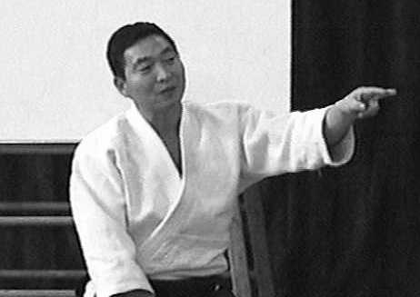

| INICIO | CLASES | TÉCNICAS | VIDEOS | SALUD | SEMINARIO | ORGANIZACIONES | HISTORIA | TEXTOS | BIBLIOGRAFÍA | LINKS |

Textos Recomendados
Yoshigasaki Doshu habla sobre el significado de la palabra Sensei y su diferencia con la palabra Doshu. Importante comprensión para saber como dirigirse respetuosamente hacia un maestro.
Significado de la Palabra Sensei
En Japón, a alguien que dicta clases sobre cualquier tema se lo llama Sensei. Un maestro de jardín de infantes muy joven puede ser llamado Sensei por un padre de un alumno que lo dobla en edad, porque el padre aprecia el hecho de que el joven maestro eduque a su hijo. Es similar a usar Sr., Sra., o Sta., simplemente indica respeto hacia la persona. En Japón un abogado o un doctor normalmente son llamados Sensei, porque se supone que ellos saben más que otros. A partir de que los abogados a menudo se vuelven políticos, también a ellos se los llama frecuentemente Sensei. Es cierto que en Japón la palabra Sensei es a veces de uso abusivo. Sin embargo, en general, a un maestro Japonés normalmente se lo llama de ese modo.
Esta también la pregunta de que lo hace a uno un Sensei. Cuando uno educa, uno es un Sensei, pero uno puede no serlo, si uno no esta dando clases. Esto depende de su materia. Si uno dicta clases de técnicas de Aikido, uno es un maestro solo en el tatami y si esto es por pocas horas, es inconveniente estar cambiando de un titulo a otro dentro y fuera del tatami. Las personas a las que se las llama Sensei, se supone que se comportan como un maestro también en su vida diaria. De esta forma, se puede continuar refiriéndose a ellos como Sensei, sin la necesidad de cambiar de titulo.
Esto crea una nueva pregunta: como debe comportarse un maestro en su vida diaria?. El Budismo Zen, comienza con la idea de entender la vida. Esto sugiere que cuando uno entiende la vida, se siente como si uno hubiera nacido nuevamente. Sen significa antes y Sei significa nacido. Por eso Sensei significa literalmente, una persona que nacio antes. Este nacimiento es espiritual y no físico. El significado original de Sensei es: alguien que nació espiritualmente antes que otros. Si uno se fija en el significado original, solo aquellos que entienden la vida y se comportan como un maestro las 24 horas del día, aun en su vida diaria, ellos deben ser llamados Sensei.
El respeto suele ser muy importante para las personas en todo el mundo. Uno debería respetar a los seres humanos, animales, arboles, etc. En otras palabras, solo la vida y las cosas vivientes deberían ser respetadas. Uno no debe respetar los materiales. Aun en el caso de máquinas de alta tecnología como los autos Ferrari o grandes trabajos de arte. No son los objetos los que deben ser respetados sino los seres humanos que están detrás de la creación de ellos. Uno respeta la vida, porque cada vida esta relacionada a otras vidas, y estos millones y billones de relaciones, crean y mantienen la vida en la tierra. El respeto crea mejores relaciones entre las vidas, y eso es porque el respeto era y es una de las cosas mas importantes en la vida. Respeto en realidad significa no perturbar las relaciones entre las diferentes vidas.
Cuando el respeto fue demostrado, se lo llama honor. Las personas acostumbraban estar listas para morir por honor, porque las relaciones entre las vidas eran esenciales para la supervivencia de los seres humanos. En estos días, ambos, respeto y honor, estan casi olvidados porque hemos desarrollado una civilización basada en armas y en lo material. La supervivencia depende de las armas y la política y no mas en las relaciones entre las diferentes vidas.
Aikido es un camino (Do) y el camino debe ser mantenido en la práctica del Aikido. A la persona que resguarda el camino se la llama Doshu. Hay dos significados diferentes de Doshu en Japons. El primero significa "maestro del camino o vía" y el segundo significa "custodio del camino o vía". La diferencia es que puede haber solo un maestro de la vía pero muchos custodios de la vía. El maestro superior de cualquier organización de Aikido debería ser llamado Doshu - custodio de la vía - pero en realidad muchas organizaciones de Aikido no tienen un Doshu. Esto es, porque la mayoría de los maestros japoneses siguen los preceptos de algun otro maestro, en especial de Morihei Ueshiba, aunque el este muerto. Tambien hay maestros, que no siguen a alguien en particular, pero en su lugar, siguen alguna filosofía establecida. Ellos tampoco son custodios de la vía. Por eso es que no hay muchos Doshu en el mundo de Aikido. Un maestro es Doshu solo cuando el muestra la vía en forma completamente independiente de cualquier filosofía u otros maestros incluidos los fallecidos.